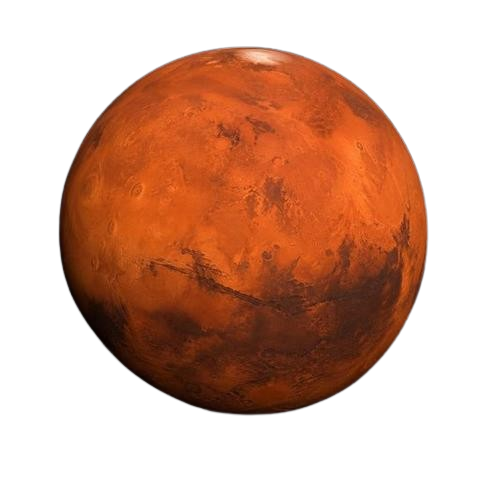

THE RED PLANET
MARS
Mars is a mysterious red planet known for its dusty surface, giant volcanoes and ancient valleys. Scientists are exploring Mars to discover whether life could have existed there.
687 Days
One Year
-65°C
Average Temperature
6,779 km
Diameter

Explore The Red Planet
Mars has the largest volcano in the Solar System, Olympus Mons. Its reddish appearance comes mainly from iron-rich dust on its surface.